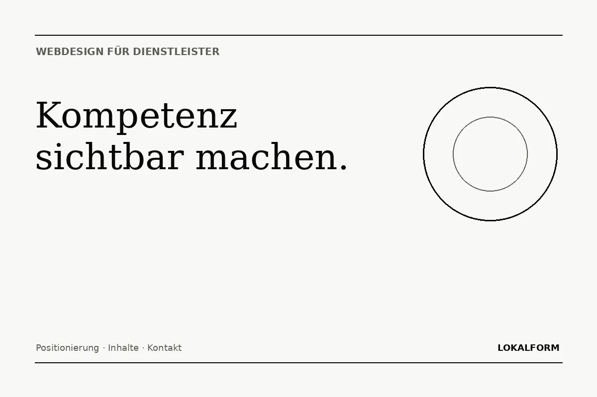

Wer ist die richtige Zielgruppe und welche Leistung soll zuerst verstanden werden?
Kompetenz verständlich machen
Webdesign für Dienstleister
Wenn die Leistung nicht im Regal steht, muss die Website umso klarer erklären, welchen Wert sie schafft. Lokalform verbindet Positionierung, Design, Inhalt und Anfrageführung.

Positionierung
Dienstleistungen verkaufen sich über Klarheit.
Bei Dienstleistungen ist das Produkt oft nicht sofort sichtbar. Eine Website muss deshalb schneller erklären, für wen die Leistung gedacht ist, welches Problem gelöst wird und wie die Zusammenarbeit abläuft. Statt allgemeiner Formulierungen entsteht eine klare Positionierung mit konkreten Leistungsseiten, nachvollziehbaren Abläufen und einem eindeutigen nächsten Schritt.
Für Beratungen, Studios, Agenturen, Praxen und spezialisierte Dienstleister ist die Website häufig der erste Vertrauensmoment. Gestaltung und Inhalt müssen deshalb zusammenarbeiten: professionell genug für Kompetenz, individuell genug für Wiedererkennung und übersichtlich genug für eine schnelle Entscheidung.
Prozess, Arbeitsweise, Beispiele und konkrete Antworten machen Kompetenz greifbar.
Anfrage, Erstgespräch oder Termin werden als klarer nächster Schritt geführt.
Seitenarchitektur
Jede wichtige Leistung bekommt eine eigene Aufgabe.
Eine einzelne lange Startseite kann funktionieren, wenn das Angebot sehr kompakt ist. Sobald mehrere Leistungen unterschiedliche Zielgruppen oder Fragen haben, ist eine mehrseitige Struktur meist sinnvoller. Dadurch können Nutzer direkt bei der passenden Information einsteigen, während Suchmaschinen einzelne Themen klarer voneinander unterscheiden können.
| Seite | Frage des Besuchers |
|---|---|
| Start | Was bietet dieses Unternehmen und warum sollte ich weiterlesen? |
| Leistung | Passt genau diese Leistung zu meiner Situation? |
| Arbeitsweise | Wie läuft die Zusammenarbeit konkret ab? |
| Preise / Einstieg | In welcher Größenordnung bewegt sich das Angebot? |
| Kontakt | Wie starte ich ohne unnötige Hürde? |
Conversion
Weniger Ablenkung. Mehr Entscheidung.
Gute Conversion entsteht nicht durch zehn blinkende Buttons. Sie entsteht, wenn Inhalt, Vertrauen und nächster Schritt an der richtigen Stelle zusammenkommen. Deshalb werden Terminbuchung, Anfrage und Angebotslogik nicht als Fremdkörper ergänzt, sondern in die Seitenführung integriert.
Nächster Schritt
Aus einer Idee wird eine klare Website.
20 Minuten reichen für eine erste Richtung: Ziel, Umfang, Seitenstruktur und sinnvolle Funktionen.
Termin auswählen ↗